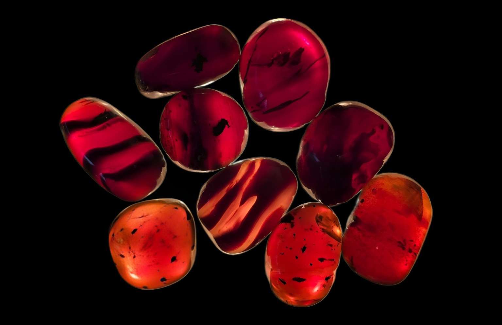
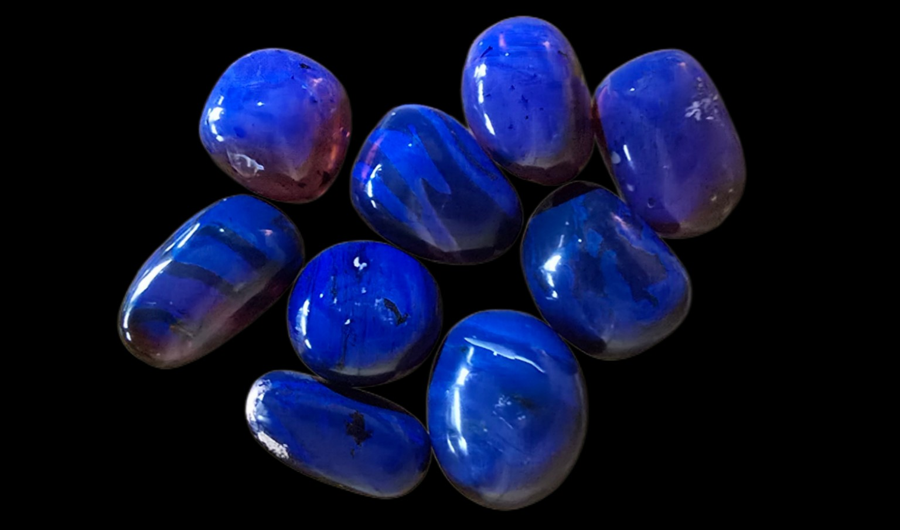
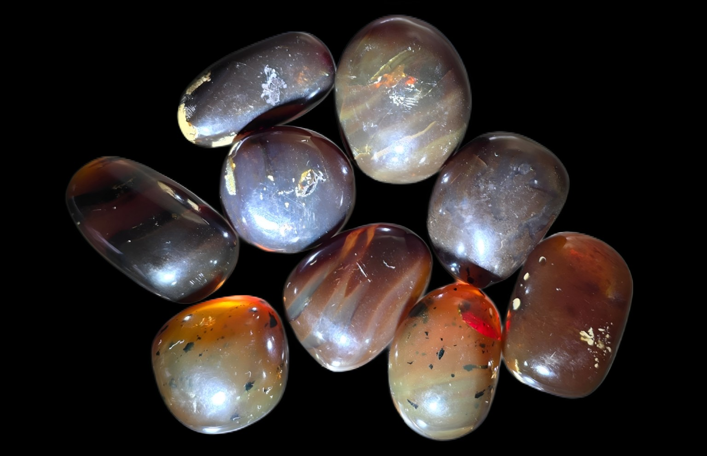

Symbolic Object
Amber Anchor
The Amber Anchor is a natural piece of amber selected to support grounding, stability, and intentional return.
Each piece is formed over time and carries its own depth, tone, and internal character. It is not shaped to be identical — it is chosen for presence.



The images shown here feature the same amber pieces photographed in different lighting conditions. Amber responds strongly to light — the same piece may appear deeper, brighter, cooler, warmer, or more translucent depending on how it is viewed.
What remains constant is the material itself — natural, grounded, and unchanged at its core.
Purchase
Buy Amber AnchorRitual Use
Keep the Amber Anchor with you, hold it during moments of reflection, or place it in your ritual space as a physical point of return.
FAQ
Will my piece look exactly like the photos?
Each Amber Anchor is naturally unique. The images shown demonstrate how the same pieces can appear differently depending on lighting.
Why does the color look different in each image?
Amber is highly responsive to light. Changes in lighting and angle can shift how color and depth appear, even though the material itself remains the same.
What does the Amber Anchor represent?
It represents grounding, stability, and the ability to return to yourself through change and movement.
How do I use it?
Use it as a physical reminder during your ritual practice or carry it as a grounding object throughout your day.
← Return home